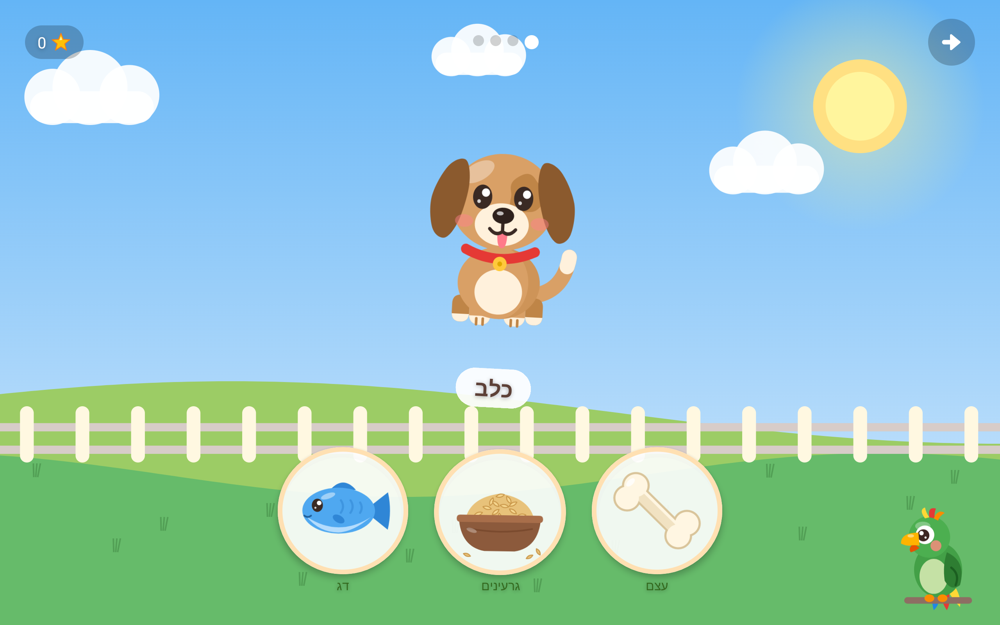
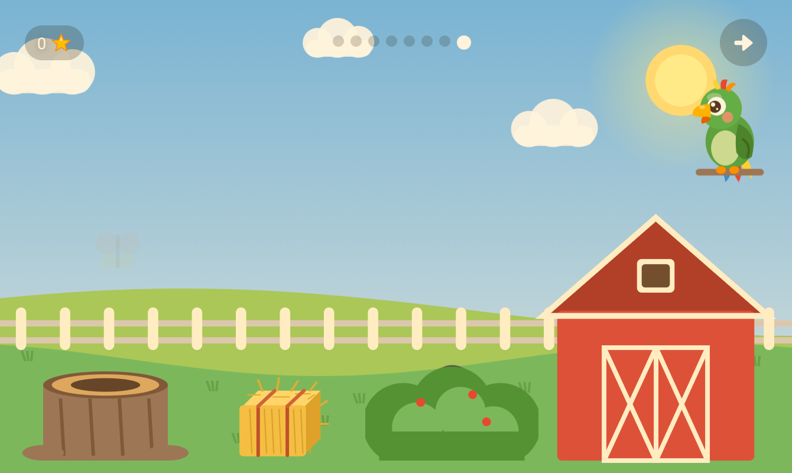
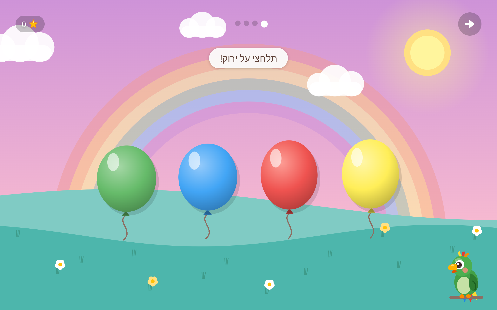
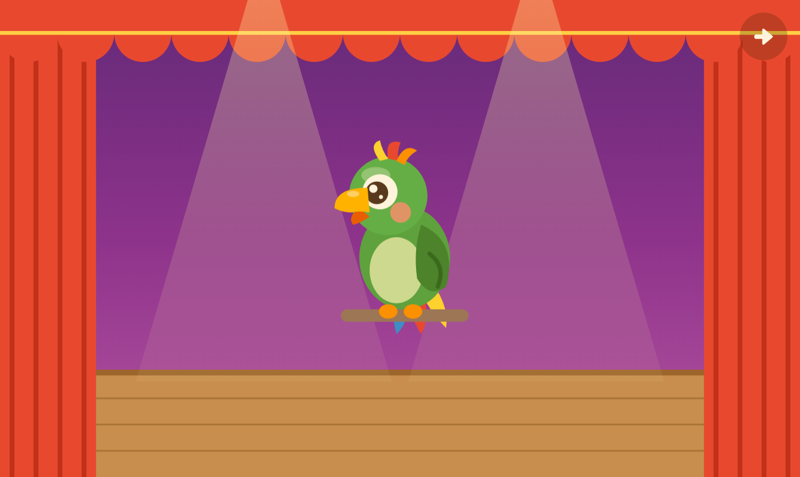
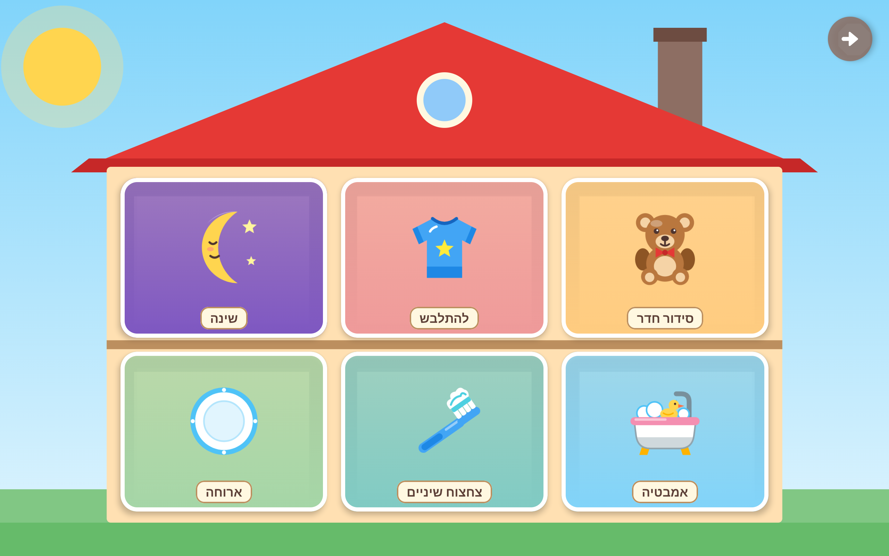
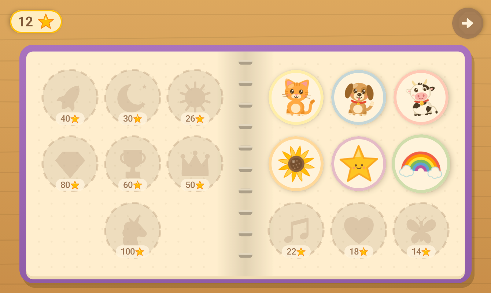

למה פוקיWhy Puki exists
בניתי את פוקי כי נמאס לי ממשחקים לפעוטות שעוצרים באמצע ומבקשים כסף. הבת שלי הייתה נכנסת למשחק, נהנית, ואז קופץ מסך: לשלם, לצפות בפרסומת, לפתוח את השלב הבא. בגיל שנתיים לא מבינים את זה. מבינים רק שהכיף נגמר פתאום. I made Puki because I got tired of toddler games that stop in the middle to ask for money. My daughter would get into a game, love it, and then a screen would pop up: pay, watch an ad, unlock the next level. A two-year-old can't understand any of that. All she learns is that the fun suddenly ends.
חינם, לתמידFree, forever
בלי מחיר, בלי רכישות בתוך המשחק, בלי מנויים, בלי "המשחק המלא" ובלי פרסומות. פוקי לעולם לא יבקש כסף, ואין בו בכלל קוד של תשלום.No price, no in-app purchases, no subscriptions, no "full version" and no ads. Puki will never ask for money, and there's no payment code in it at all.
שום דבר לא עוצר את הכיףNothing stops the fun
חוץ ממגבלת הזמן שההורים קובעים, וגם היא נגמרת בפרידה רגועה, לא בחומת תשלום.Except the time limit the parents set, and even that ends with a calm goodbye, not a paywall.
קוד פתוחOpen source
כל הקוד פתוח ברישיון MIT, כך שאף אחד לא יוכל לסגור אותו מאחורי תשלום.All the code is open under the MIT license, so nobody can ever lock it behind a payment.
מה יש בפניםWhat's inside
איים מלאים במשחקים, כל אחד בסצנה מצוירת משלו: חווה, גן, מגרש משחקים מתחת לקשת, במה, ובית עם שמונה חדרים. Islands full of games, each in its own illustrated scene: a farm, a garden, a playground under a rainbow, a stage, and a house with eight rooms.
גן החיותAnimal Garden
מאכילים כל חיה באוכל הנכון, ומנחשים של מי הצל.Feed each animal the right food, and guess whose shadow it is.
צבעים, צורות, ספירה ואותיותColors, shapes, counting, letters
מפוצצים את הבלון הנכון, גוררים צורות למקום, סופרים אחד-אחד ועונים "כמה יש?", ומוצאים את האות.Pop the right balloon, drag shapes into place, count one by one and answer "how many?", find the letter.
מחבואיםPeekaboo barn
חיה מתחבאת בחווה, והקול שלה מסגיר אותה. ברפת, מאחורי השיח, בערמת החציר או בגזע העץ.An animal hides on the farm and its sound gives it away: in the barn, behind the bush, the haystack or the tree stump.
תוכי מחקהEcho Puki
אומרים לפוקי משהו, והוא חוזר על זה בקול של תוכי מצחיק.Say anything, and Puki says it back in a silly parrot voice.
מדברים עם פוקיSay it with Puki
פוקי אומר מילה, והילדים אומרים אותה בחזרה. עם המוח של פוקי, הוא גם מקשיב ועוזר בעדינות.Puki says a word and the child says it back. With Puki's brain, he also listens and helps gently.
מוזיקהMusic
תוף, קסילופון, תוף מרים ורעשנים על במה, ואז חוזרים על מנגינה קטנה.A drum, a xylophone, a tambourine and maracas on a stage, then a little tune to repeat.
היום שליMy Day
אמבטיה, ארוחה, התלבשות, סידור החדר, צחצוח שיניים ושינה, ועכשיו גם אופים עוגה במטבח ושוטפים מכונית במוסך.Bath, table, dressing, tidying, teeth and bedtime, and now baking a cake in the kitchen and washing a car in the garage.
ציור ומדבקותDrawing and stickers
מציירים על כן ציור, מדביקים חותמות וצובעים דפי צביעה. אלבום המדבקות מתמלא בכוכבים.Paint on an easel, stamp stickers and fill in coloring pages; the sticker album fills up with stars.






בנוי לפעוטותBuilt for toddlers
- בלי קריאהNo readingהכול בתמונות ובקול חם. ההוראות בעברית פונות בלשון של הילד או הילדה (תלחצי / תלחץ).Everything is pictures and a warm voice; Hebrew instructions follow the child's gender.
- אין "טעות"No failureתשובה לא נכונה מקבלת ניעור עדין ו"ננסה שוב". אחרי רגע של שקט השאלה חוזרת, ואחרי שני ניסיונות התשובה זוהרת.A wrong answer gets a gentle shake and "let's try again"; after a quiet moment the question repeats, and after two tries the answer glows.
- גדל עם הילדGrows with the childכל משחק עולה רמה אחרי משחקים קלים ויורד אחרי קשים.Every game moves up a level after easy sessions and back down after hard ones.
- פרידה רגועהA calm goodbyeכשנגמר הזמן שההורים קבעו, אין ספירה לאחור: יורד ערב, פוקי מפהק ומנופף לשלום.When the parent's time limit is up there's no countdown: evening falls, Puki yawns and waves goodbye.
פוקי, התוכיPuki, the parrot
- מגיב למה שקורהReacts to what happensכותב משפט חדש על מה שהילד עשה, מסתכל על הציורים, מספר סיפור לפני השינה על היום, ועונה כשמדברים איתו.Writes a fresh line about what the child did, looks at drawings, tells a bedtime story about the day, and answers when spoken to.
- המוח במחשב בביתHis brain is on your PCתוכנה חינמית למחשב עם ווינדוס או לינוקס. עם כרטיס NVIDIA עם 6GB זיכרון ומעלה פוקי עונה תוך שנייה בערך; בלי כרטיס הוא עובד על המעבד, רק לאט יותר.A free program for a Windows or Linux PC. With an NVIDIA graphics card with 6 GB of memory or more, Puki answers in about a second; without one he runs on the processor, just slower.
- מילים בטוחות בלבדKept on a short leashהמשפטים של פוקי קצרים ונכתבים לפעוטות. מסנן בודק כל משפט (רק אותיות עבריות או אנגליות, בלי מילים לא נעימות), ומשפט שלא עובר נזרק ופוקי אומר במקומו משפט מוקלט. ההורים יכולים לראות כל משפט בזמן אמת במחשב.Puki's lines are short and written for a toddler. A filter checks every line (Hebrew or English letters only, no unkind words); a line that fails is thrown away and Puki says a recorded one instead. Parents can watch every line live on the PC.
- או בטלפון חזקOr on a high-end phoneבטלפון עם כ-12GB זיכרון (נבדק על Galaxy S25) פוקי חושב, מדבר ומקשיב על המכשיר עצמו, גם מחוץ לבית.On a phone with about 12 GB of memory (tested on a Galaxy S25) Puki thinks, talks and listens on the device, away from home too.
- בלי מחשב?No PC?כל המשחקים עובדים על הטאבלט לבד, ופוקי עדיין יושב בפינה ומדבר בקול המוקלט שלו.Every game works on the tablet alone, and Puki still sits in his corner and talks in his recorded voice.
פרטיותPrivacy
נבנה בשביל ילדה אחת, בבית אחד. הכללים בהתאם.Built for one child, in one home. The rules follow from that.
שום דבר על הילדים לא יוצא מהביתNothing about your child leaves home
בלי חשבונות, פרסומות, אנליטיקה או ענן. הקול, הציורים והשם עוברים רק למחשב שלכם או נשארים בטאבלט. האפליקציה רק בודקת ב-GitHub אם יש גרסה חדשה, ומורידה את המודלים פעם אחת אם מפעילים את המוח בטלפון. מדיניות הפרטיותNo accounts, ads, analytics or cloud. The voice, drawings and name go only to your own PC or stay on the tablet. The app only checks GitHub for a new version, and downloads the models once if you turn on the phone brain. Privacy policy
חיבור מוצפןEncrypted
הטאבלט והמחשב מדברים בחיבור מוצפן, ורק המחשב שלכם יכול לענות לטאבלט.The tablet and the PC talk over an encrypted connection that only your own PC can answer.
השם נשאר בביתThe name stays home
שם הילד שמור רק בטאבלט ובמחשב שלכם. ההקלטות של התוכי המחקה לא נשמרות.The child's name lives only on your tablet and PC. Echo Puki's recordings are never kept.
גרסאות חתומותSigned releases
כל גרסה חתומה במפתח של פוקי, ותוכנת המחשב בודקת כל קובץ שהיא מורידה.Every version is signed with Puki's key, and the PC program checks every file it downloads.
לסקרנים הטכנייםFor the technically curious
- הטאבלט והמחשב מדברים ב-HTTPS עם תעודה שהמחשב יוצר לעצמו; קוד ה-QR נושא את טביעת ה-SHA-256 שלה, והאפליקציה מצמידה אותה, כך שאף מכשיר אחר ברשת לא יכול להתחזות.Tablet and PC talk HTTPS with a certificate the PC makes for itself; the QR code carries its SHA-256 fingerprint and the app pins it, so no other device on the network can pose as the PC.
- טביעת תעודת החתימה של ה-APK (SHA-256):The APK signing certificate (SHA-256):
a799cab5bcf83c20c754490f8d0eb271cf844e2b7e69518760789f2a96eb3c3d - מתקין המחשב בודק כל הורדה מול טביעות SHA-256 קבועות (brain/pins.json).The PC installer checks every download against fixed SHA-256 pins (brain/pins.json).
- המודלים: Gemma 4 של Google לשיחה ולראייה, Whisper של ivrit.ai ו-Parakeet לשמיעה, ו-BlueTTS לקול. פרטיםThe models: Google's Gemma 4 for talk and sight, ivrit.ai's Whisper and Parakeet for hearing, BlueTTS for the voice. Details
- עדכונים אוטומטיים מ-GitHub דרך Obtainium (עם "לכלול גרסאות טרום-שחרור"). כל הגרסאות: GitHub Releases.Automatic updates from GitHub through Obtainium (with "include prereleases" on). Every version: GitHub Releases.
איך מתחיליםGetting started
על הטאבלט: סורקים עם המצלמהOn the tablet: scan with the camera
הקוד פותח את ההורדה של הגרסה החדשה ביותר. או פותחים בטאבלט את הכתובתThe code opens the newest version's download. Or open this address on the tablet: tomsadeh.github.io/puki/get.html
- מתקינים את המשחק בטאבלטInstall the game on the tablet
מורידים את ה-APK (אנדרואיד 8 ומעלה) ומאשרים התקנה; כך זה נראה. אחר כך המשחק מתעדכן לבד מההגדרות של ההורים. Download the APK (Android 8 or newer) and allow the install; here's what you'll see. After that the game updates itself from the parent settings. - מתקינים את המוח של פוקי במחשב (לא חובה)Set up Puki's brain on a PC (optional)
בווינדוס מריצים את Puki.exe; בלינוקסpython3 brain/install.py. ההתקנה מורידה כ-10GB ומגדירה הכול. On Windows run Puki.exe; on Linuxpython3 brain/install.py. It downloads about 10 GB and sets everything up. - סורקים את קוד ה-QRScan the QR code
בהגדרות של ההורים (לחיצה ארוכה על גלגל השיניים) סורקים את הקוד שבלוח הבקרה של המחשב. זהו, פוקי מחובר. In the parent settings (long-press the gear), scan the code on the PC's dashboard. That's it: Puki is connected.
התקנה מחוץ לחנות, צעד אחר צעדInstalling from outside the store, step by step
פוקי בדרך ל-Google Play. עד אז, אנדרואיד שואל כמה שאלות בפעם הראשונה. זה נראה מפחיד, אבל זה רגיל לכל אפליקציה מחוץ לחנות.Puki is on its way to Google Play. Until then, Android asks a few questions the first time. It looks alarming, but it's the same for any app from outside the store.
1מורידיםDownload
בטאבלט: סורקים את הקוד למעלה או לוחצים "הורדה לאנדרואיד". אם Chrome אומר שהקובץ "עלול להזיק", לוחצים "להוריד בכל זאת".On the tablet, scan the code above or tap "Download for Android". If Chrome says the file "may be harmful", tap "Download anyway".
2מאשרים התקנה מהדפדפןAllow the browser to install
פותחים את הקובץ שהורד. אנדרואיד מבקש רשות: "הגדרות", ומדליקים את המתג (פעם אחת בלבד).Open the downloaded file. Android asks for permission: tap "Settings" and turn on the switch (just once).
3מתקיניםInstall
חוזרים אחורה ולוחצים "התקנה". אם Play Protect אומר "אפליקציה לא מוכרת", לוחצים "פרטים נוספים" ואז "להתקין בכל זאת". כל APK חתום במפתח של פוקי.Go back and tap "Install". If Play Protect says "unrecognized app", tap "More details", then "Install anyway". Every APK is signed with Puki's key.
4משחקיםPlay
פותחים את פוקי: מסך פתיחה קצר שואל שפה, שם, בת או בן, ואת המחשב של פוקי (לא חובה). מכאן העדכונים מגיעים מתוך המשחק.Open Puki: a short welcome asks for the language, a name, girl or boy, and Puki's PC (optional). From here on, updates come from inside the game.